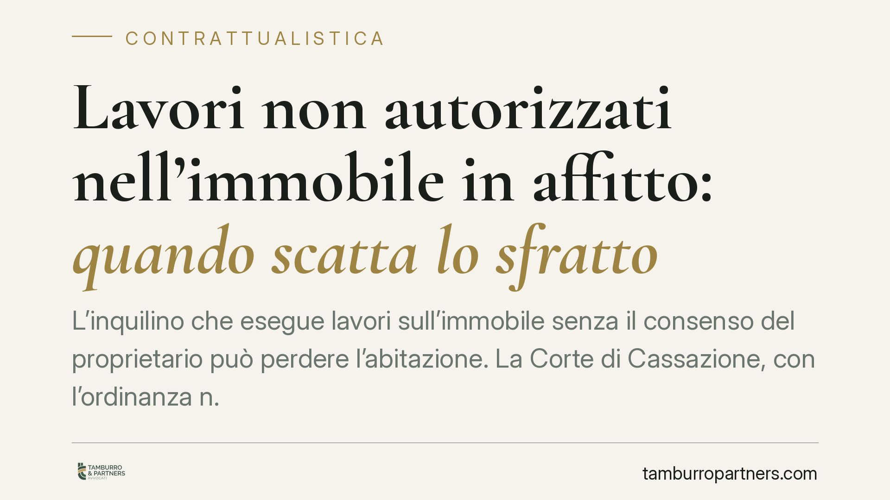

Lavori non autorizzati nell'immobile in affitto: quando scatta lo sfratto
L'inquilino che esegue lavori sull'immobile senza il consenso del proprietario può perdere l'abitazione. La Corte di Cassazione, con l'ordinanza n. 12384/2022, ha confermato che le modifiche non autorizzate possono giustificare la risoluzione del contratto di locazione. Vediamo entro quali limiti il conduttore può intervenire e quando il rischio diventa concreto.

Il principio affermato dalla Cassazione
La Corte di Cassazione, con l'ordinanza n. 12384 del 14 giugno 2022, ha ribadito un principio già consolidato: il conduttore (cioè l'inquilino) è tenuto a conservare l'immobile nello stato in cui lo ha ricevuto. Le modifiche eseguite senza il consenso del proprietario, quando alterano la destinazione o la struttura del bene, costituiscono un inadempimento contrattuale idoneo a fondare la risoluzione del contratto e, di conseguenza, lo sfratto.
Non ogni intervento, però, espone a questo rischio. La gravità dell'inadempimento va valutata caso per caso: contano la natura dei lavori, la loro reversibilità e l'incidenza sul valore o sull'uso dell'immobile.
Inquadramento normativo
Il riferimento principale è l'art. 1587 del Codice civile, che impone al conduttore di servirsi della cosa locata "con la diligenza del buon padre di famiglia" e secondo l'uso previsto nel contratto. A questo si affianca l'art. 1590 c.c., che obbliga a restituire l'immobile nello stato in cui è stato consegnato, salvo il deterioramento dovuto al normale uso.
Quando il conduttore esegue opere che modificano la struttura o la destinazione del bene senza autorizzazione, viola questi obblighi. L'art. 1455 c.c. consente al proprietario di chiedere la risoluzione del contratto se l'inadempimento non è di scarsa importanza. È proprio su questa soglia di gravità che si concentra l'accertamento del giudice.
Va distinta la situazione delle semplici migliorie (interventi che aumentano il valore del bene) da quella delle addizioni e delle modifiche strutturali. Le prime, in linea generale, non legittimano lo sfratto; le seconde, se non autorizzate e non removibili senza danno, sì.
Cosa cambia per l'inquilino
Il messaggio operativo è chiaro: l'autonomia del conduttore nel modificare l'immobile è limitata. Tinteggiare le pareti o sostituire elementi facilmente ripristinabili rientra di norma in un uso ordinario. Abbattere tramezzi, modificare impianti, mutare la destinazione d'uso di un locale o realizzare opere edilizie stabili è tutt'altra cosa.
La differenza pratica è netta. Un intervento reversibile, al più, comporta l'obbligo di ripristino a fine locazione. Un intervento strutturale non autorizzato può invece costare la perdita dell'immobile prima della scadenza naturale del contratto, oltre all'eventuale risarcimento del danno.
Il proprietario, dal canto suo, non deve tollerare l'alterazione del proprio bene confidando nel fatto compiuto. La giurisprudenza riconosce il suo diritto di reagire, purché l'inadempimento sia effettivamente grave.
Il valore dell'autorizzazione scritta
Molti contratti di locazione contengono clausole che vietano espressamente modifiche senza consenso scritto del locatore. Anche in assenza di una clausola simile, il consenso resta la via maestra per mettersi al riparo. Un'autorizzazione verbale, infatti, è difficile da provare in un eventuale giudizio.
È utile che l'autorizzazione precisi anche la sorte delle opere al termine della locazione: se restano al proprietario, se vanno rimosse, se è previsto un indennizzo. Senza accordi su questo punto si applicano le regole generali del Codice civile, spesso meno favorevoli al conduttore.
Cosa fare in concreto
- Chiedi sempre il consenso scritto al proprietario prima di avviare qualsiasi lavoro che vada oltre la semplice manutenzione o tinteggiatura.
- Verifica il contratto: leggi le clausole su modifiche, migliorie e ripristino prima di intervenire sull'immobile.
- Conserva la documentazione di ogni intervento e dell'autorizzazione ricevuta, comprese fotografie dello stato dei luoghi.
- Distingui i lavori reversibili da quelli strutturali: per gli interventi che incidono sulla struttura o sulla destinazione, non procedere senza accordo formale.
- Definisci per iscritto la sorte delle opere a fine locazione, per evitare contestazioni su rimozione e indennizzi.
Consigliamo, in ogni caso di dubbio, di valutare la situazione prima di intervenire: un'opera già eseguita è molto più difficile da gestire rispetto a un accordo concordato in anticipo.
Disclaimer
Contributo informativo a cura di Tamburro & Partners - Avv. Giuseppe Tamburro. Non costituisce parere legale.
Ogni contratto ha il suo equilibrio.
Se vuoi una revisione delle clausole o una redazione su misura, scrivi allo studio. Ti rispondiamo entro un giorno lavorativo.